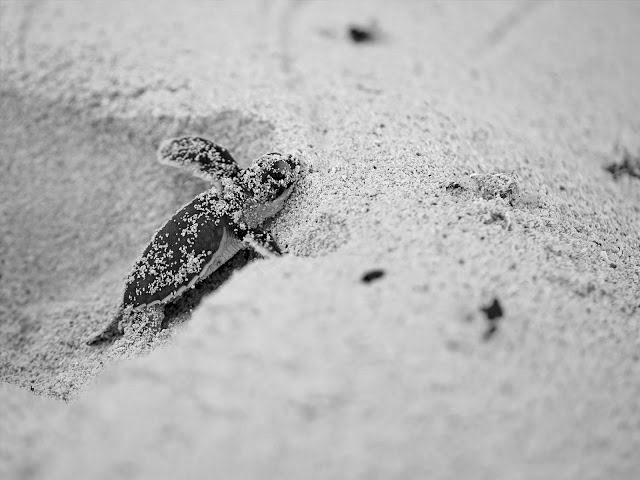

Redang Island is an island in Kuala Nerus District, Terengganu, Malaysia. It is one of the largest islands off the east coast of Peninsular Malaysia. It is famous for its crystal clear waters and white sandy beaches. It is one of nine islands, which form a marine sanctuary park offering snorkeling and diving opportunities for tourists.The Redang archipelago comprises Pulau Redang, Pulau Lima, Pulau Paku Besar, Pulau Paku Kecil, Pulau Kerengga Kecil, Pulau Kerengga Besar, Pulau Ekor Tebu, Pulau Ling and Pulau Pinang. Pulau Redang is the biggest of all the islands in the Marine Park, measuring about 7 km long and 6 km wide. Its highest peak is Bukit Besar at 359 metres above sea level. The boundary of the Pulau Redang Marine Park is established by a line linking all points 2 nautical miles from the shores of Pulau Redang, Pulau Lima, Pulau Ekor Tebu and Pulau Pinang. The other nearby islands of Pulau Perhentian Besar, Pulau Perhentian Kecil, Pulau Lang Tengah, Pulau Kapas and Pulau Susu Dara are also gazetted and protected as Marine Parks. Today, only the bigger islands like Redang, Lang Tengah, Perhentian and Kapas have resort facilities for visitors. The management of Marine Parks primarily involves protection of the sensitive marine and terrestrial ecosystems by controlling the impact from human activities. These include waste pollution management and conservation of coral reefs and terrestrial habitats.
Such a cute baby turtle!If you are not into water activities, that’s okay. Apart from diving, snorkelling and island hopping, you can go for turtle watching at Pasir Chagar Hutang, which is at the northeast part of Redang Island. The island also has a Marine Park Centre where you can learn more about turtle research and conservation efforts to protect the turtle population and marine life there. You could also go trekking on the island or play beach volleyball in a group there’s bound to be something for everyone there that boredom is out of question!